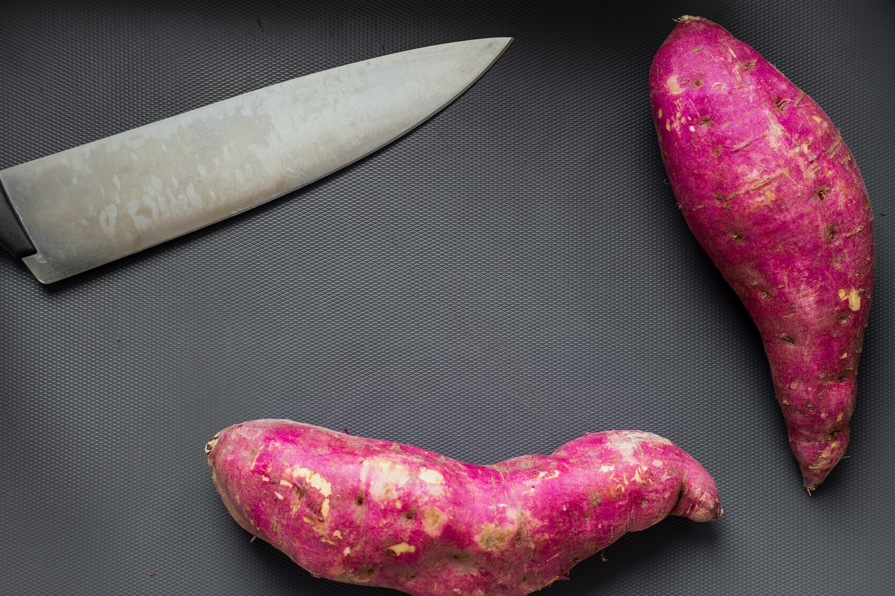

Stuffed Sweet Potatoes

Quick Vegan Dish
Ever in the mood for a vegan dish that is easy to make?
Well look no further. This quick recipe takes no time at all
and the prep is easy, we hope you enjoy!
- 4 medium yams
- 1 can black beans (or kidney if you prefer)
- 1 can sweet corn
- green onion
- vegan mayonaise
- vegan shredded mozzorella cheese
- 1 large tomato of choice (we like roma)
Steps
- Heat the oven to 400 degrees
- wash the yams and place on a baking sheet
- set the timer for 1 hour (baking time will vary)
- rinse and drain corn and beans
- cube tomatoes and chop green onion. Set aside for later
- stick a fork in the yams to check if they are done (they should be soft)
- cut the yams open and place everything in whatever order you like!
BACK TO RECIPES